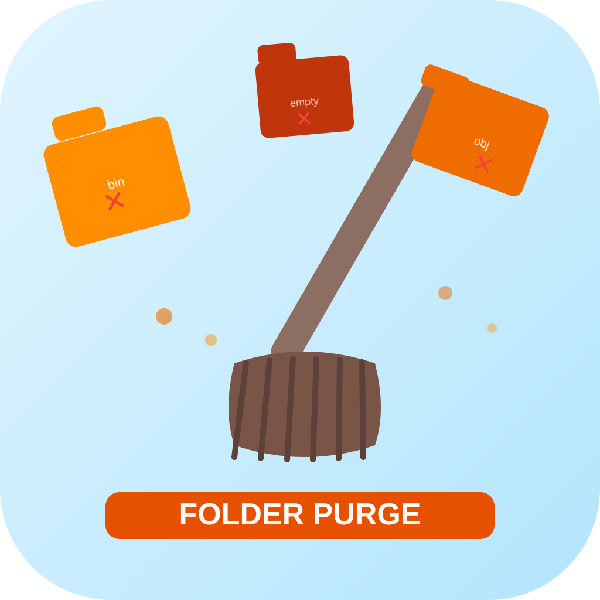
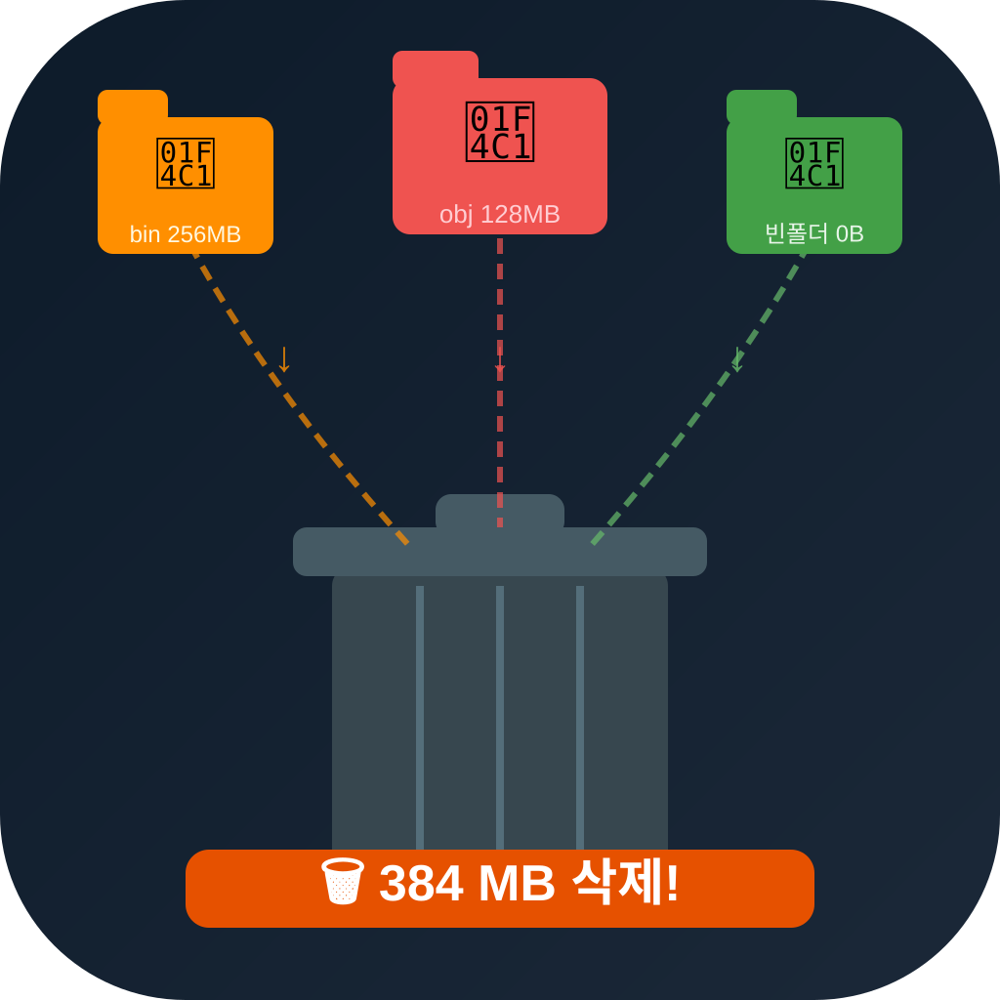
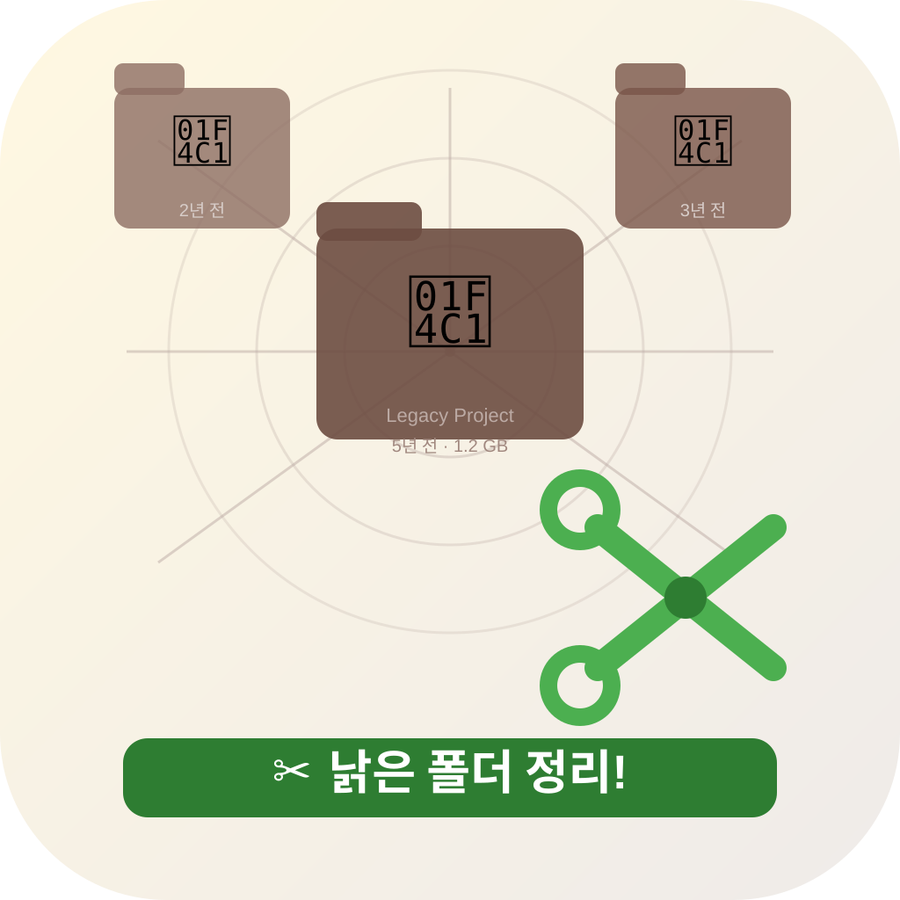
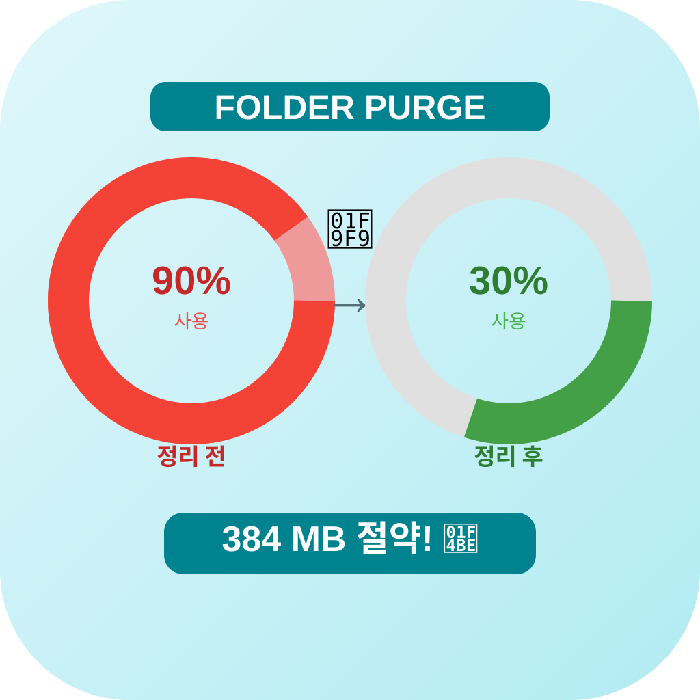

icon_04
빗자루가 X 폴더들을 쓸어내는 동작
청소 = 불필요 폴더를 쓸어버림
타입: metaphor / 패턴: 실루엣/캐릭터

icon_05
폴더들이 쓰레기통으로 날아들어감
탐지된 폴더들이 일괄 삭제되는 장면
타입: metaphor / 패턴: 대각선/동적

icon_06
거미줄에 낡은 폴더들 + 가위로 청소
방치된 레거시 폴더를 잘라내는 추상
타입: metaphor / 패턴: 공간/장면

icon_07
디스크 꽉참→빔 비포/에프터 도넛 차트
정리 전후 디스크 상태 변화를 추상화
타입: metaphor / 패턴: 기하학 추상